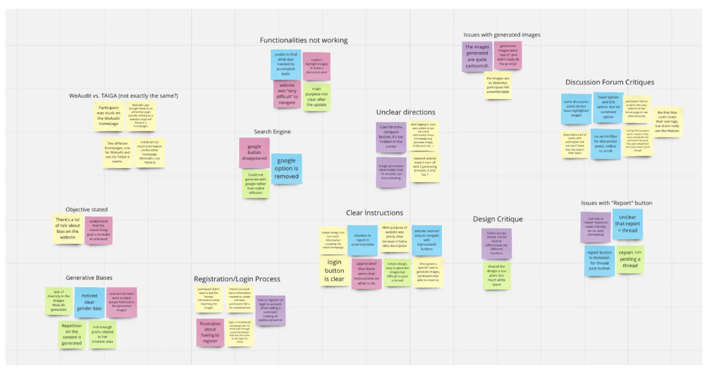
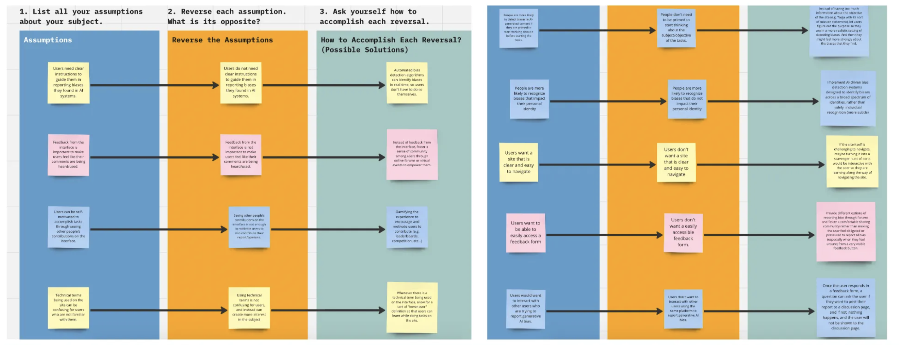
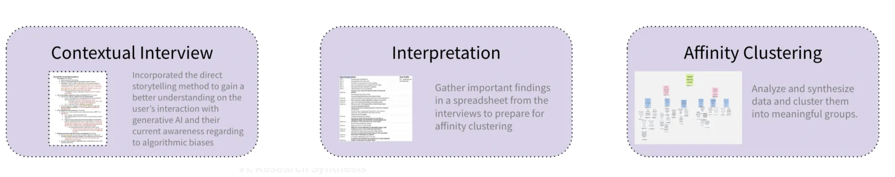
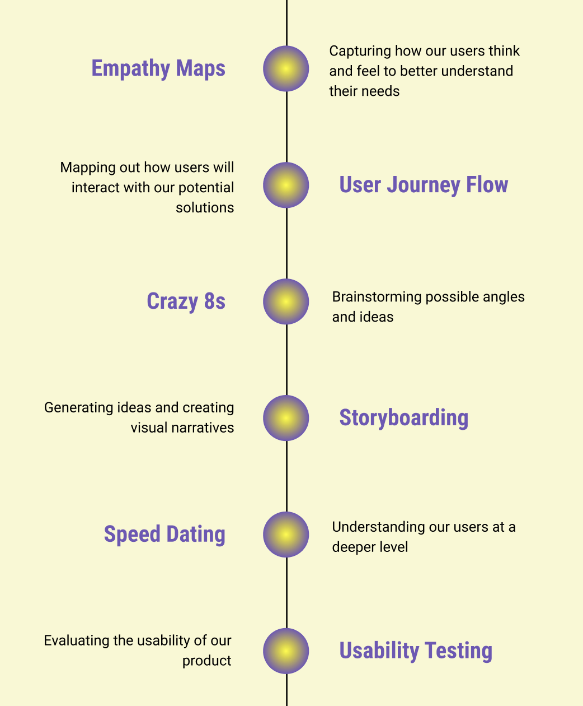
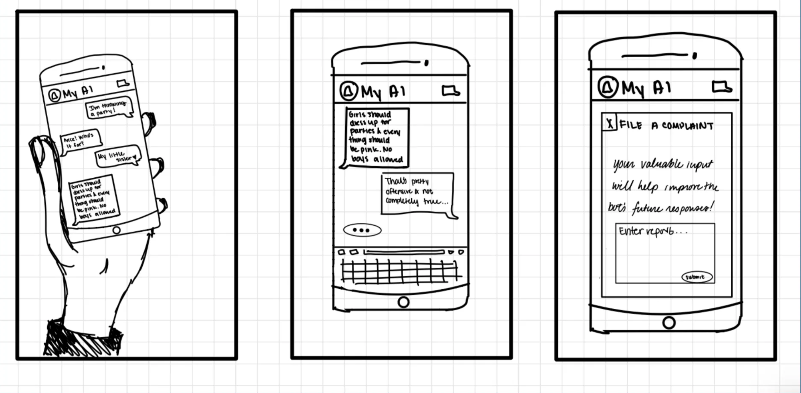
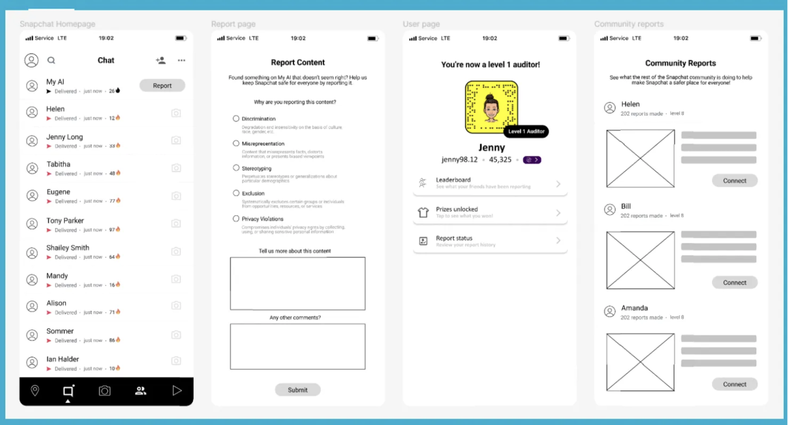
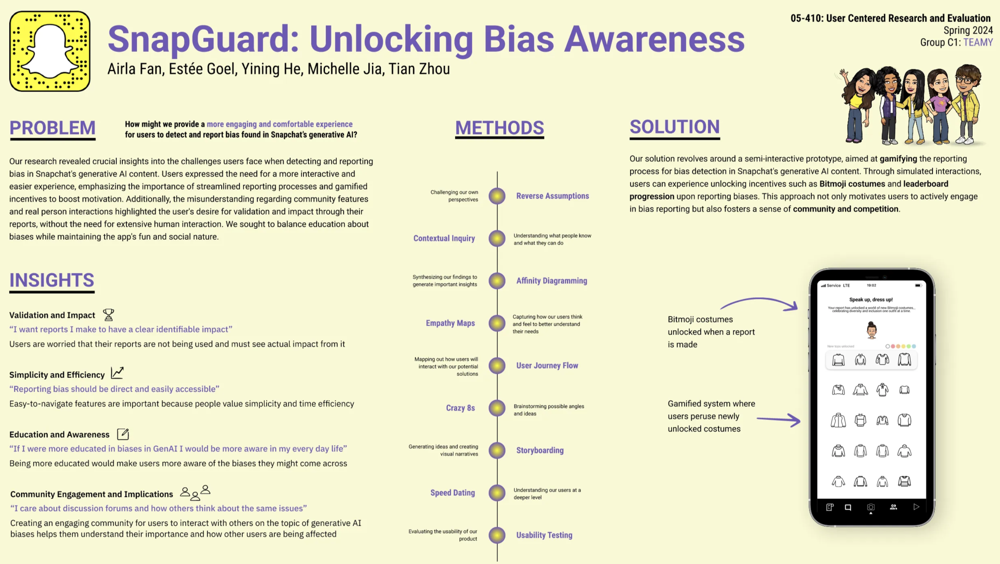

Mitigate biases in generative AI with gamification and community building
Feb-May 2024 (2 months)
Airla Fan, Estée Goel, Yining He, Michelle Jia, Tian Zhou
Project Manager
User Centered Research, UX Design, Product Design
Miro, Figma
With the increase in use and development of Genrative AI, it is important to note the levels of bias that exist in such platforms.
Through this course, my group engaged in new and tested research methods, and were able to come up with a viable final product. It was so exciting to see all our hard work come to fruition at the end!
Our solution revolves around a semi-interactive prototype, aimed at gamifying the reporting process for bias detection in Snapchat's generative AI content.
Through simulated interactions, users can experience unlocking incentives such as Bitmoji costumes and leaderboard progression upon reporting biases. This approach not only motivates users to actively engage in bias reporting but also fosters a sense of community and competition.
→ visible and easily accessible report button & one page report system
→ Bitmoji costumes unlocked, new status features, and gamified options
→ community report leaderboard to see other user reports
We began by creating a few data visualizations of our target groups, understanding how they percieve biases.
Below is an example of one of the data vizulaizations I completed for my group
First, I used the Bing Image Generator with different prompts to see what biases emerged.
Next, I compared responses to the same questions from ChatGPT and Snapchat’s MyAI, noting both differences and biases/stereotypes.
Below are some examples from my personal research:
Using this and other data analysis methods, we concluded:
We performed think-aloud usability tests asking participants to go through a set of tasks in order to assess the user experience of using the WeAudit Taiga website (the original interface for bias in GenAI).
Tasks included generating two sets of images using the compare toggle, posting a thread, finding similar posts, and verbalizing their understanding of generative AI biases through the info pages.
From our notes and findings, we synthesized reports about certain aspects of the website that was positive and negative.
I liked doing the affinity clustering (below) to see common opinions.
When choosing a project direction, we did a few activities like reverse assumptions, and walk the wall, which were helpful in narrowing down scope.
One of the main takeaways from our Reframing Activity was thinking about how we can motivate and encourage users to uncover and detect algorithmic biases in AI-generated content in a comfortable and interactive environment.
→ provide a more engaging and comfortable experience for users to detect and report bias found in Snapchat’s generative AI?
We chose to focus on Snapchat’s GenAI “MyAI,” as we consider ourselves a generation that falls quickly to the traps of social media.
How might we effectively educate users about algorithmic biases and increase their motivation to report these biases in Generative AI content?
→ creating a research guide that states our interview goals, questions, and consent script
→ found 5 participants, with which we conducted our contextual inquiry interviews
→ led interpretation sessions where we wrote down our notes from each interview
→ did affinity diagram, and modeling where we synthesized and grouped our data into different categories
Our research revealed crucial insights into the challenges users face when detecting and reporting bias in Snapchat's generative AI content. We sought to balance education about biases while maintaining the app's fun and social nature.
We performed the three methods below
At a high level, our insights were:
01 Users value simplicity when reporting potential biases in generative AI
02 Users care about “how others think” about the same issues
03 Bias is often easier to recognize in image based platforms
04 Being educated about biases in GenAI changes users’ perspectives
05 Bias in generative AI is viewed as a reflection of the people creating it
06 Users want assurance that their reports have an impact
For synthesis, we conducted the following activities:
We began with crazy 8's on paper. We sat down as a group with a 5 minute timer, and each generated the craziest ideas we could come up with.
Then we storyboarded some of our key ideas. My contributions were:
After testing our storyboards with our same initial users, we were able to use the feedback to develop our low-fi prototype.
Our prototype was created in Figma to have semi-interactive screens in order to help users simulate the experience of interacting with Snapchat My AI feature and the reporting bias process.
Through prototype testing, we discovered that users are interested in the incentives given to them after finishing a report. Whether they are a frequent users of snapchat or not, they have all indicated that such incentive system will encourage them to report biases in future cases. Most of the users have indicated signs of willing to pay more attention to generative AI, which is a big goal that we are trying to achieve.
Our final poster was a culmination of all our work. I designed our poster, and it was so cool seeing everything come together!
Please enter full screen for the full experience